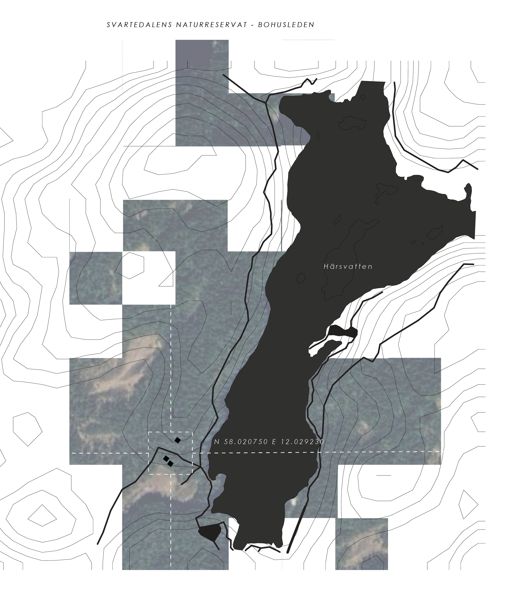
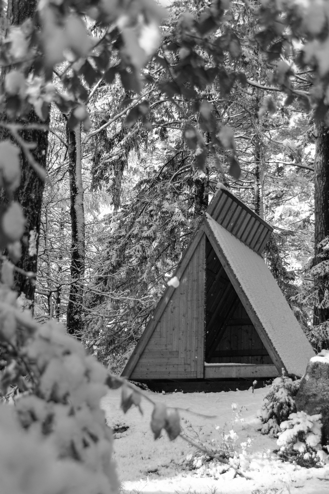

Ett vindskydd längs Bohusleden , en plats för vila och paus mitt i Svartedalens naturreservat.
Vindskyddet är placerat längs Bohusleden i Svartedalens naturreservat vid Härsvatten, och utformat för att ge skydd, vila och möjlighet till övernattning i ett utsatt landskap.

Gestaltningen utgår från traditionell träbyggnadskonst, där takets form inspirerats av gotländska faltakslösningar för att säkerställa god vattenavrinning och lång hållbarhet i ett fuktigt och vindutsatt klimat. Projektet utvecklades från första design till färdig byggnad.
